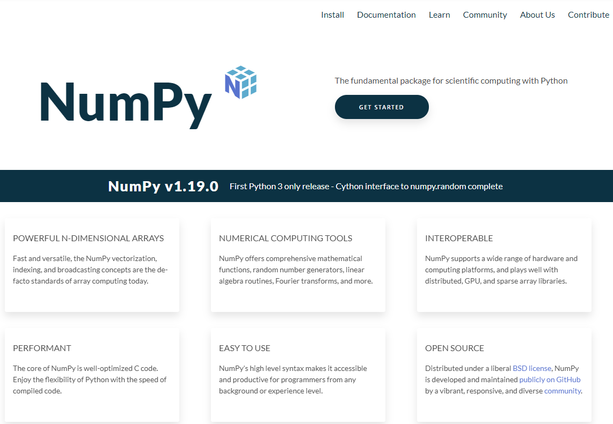
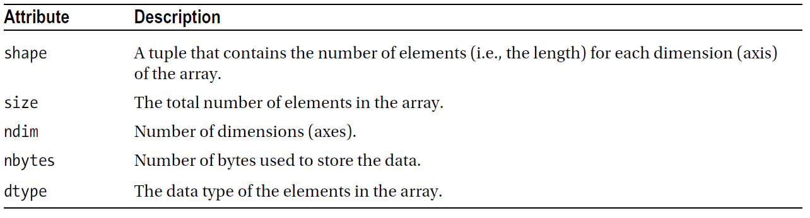
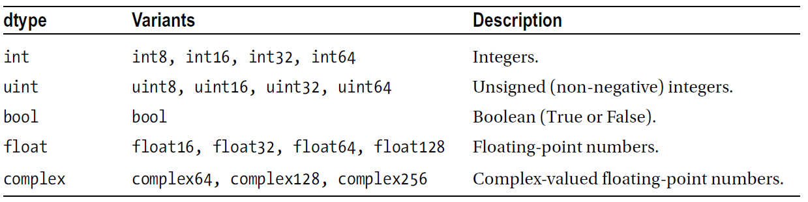
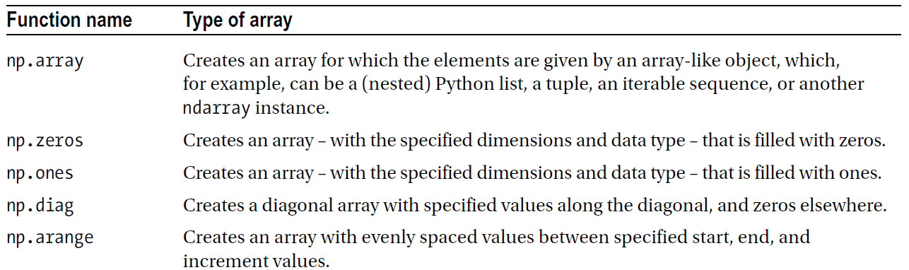
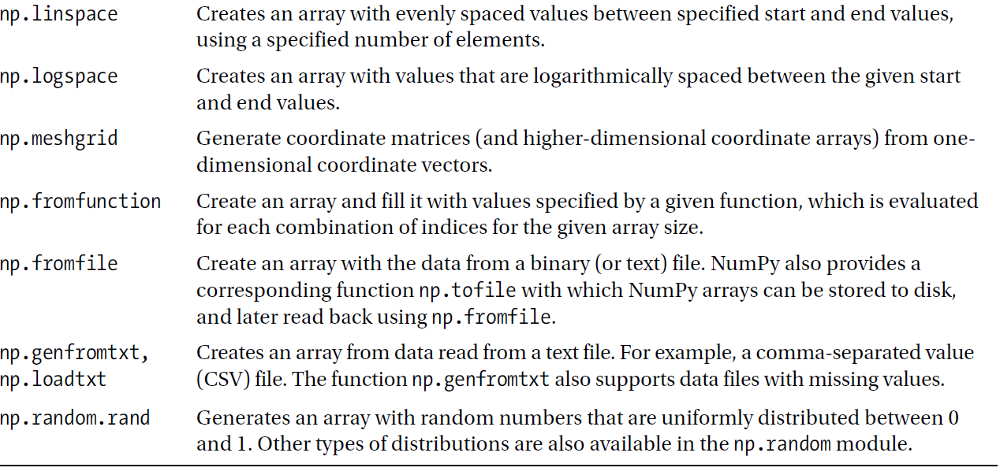
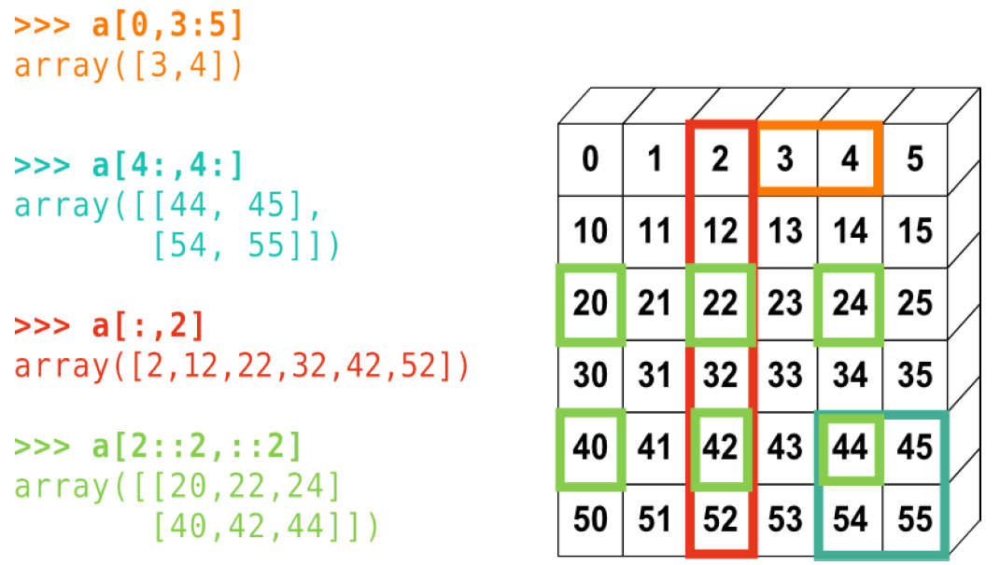
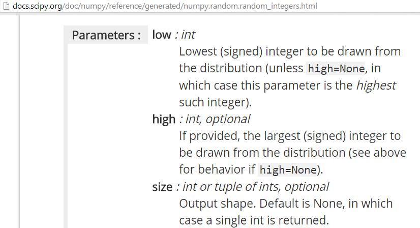
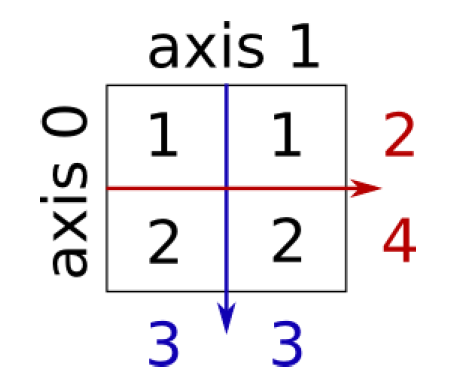

EE1021 Programming for Engineers - Lecture 11
np.array, arange, linspace, zeros, ones, eye, meshgrid, and np.randomndim, shape, dtype) and change layout with reshape and .Tsum, min, mean), sorting, and stacking@ matrix product and np.linalg (solve, inv, det, matrix_rank)with statementcsv module
object arrays).from moduleX import * then function_name(...)import moduleX then moduleX.function_name(...)import moduleX as mn then mn.function_name(...)from moduleX import function_name then function_name(...)By convention, NumPy is imported with the alias np:
ndarray).>>> import numpy as np
>>> a = np.array([0, 1, 2]) # 1-d array
>>> a
array([0, 1, 2])
>>> b = np.array([[0, 1, 2], [3, 4, 5]]) # 2 x 3 array
>>> b
array([[0, 1, 2],
[3, 4, 5]])np.array; the nesting depth sets the rank.

>>> a = np.array(range(10), float)
>>> a
array([ 0., 1., 2., 3., 4., 5., 6., 7., 8., 9.])
>>> a.dtype
dtype('float64')dtype= keyword) sets the element type.Four general mechanisms for creating arrays:
arange, ones, zeros)np.random)

>>> np.zeros(7, dtype=int)
array([0, 0, 0, 0, 0, 0, 0])
>>> np.ones((2, 3), dtype=float)
array([[ 1., 1., 1.],
[ 1., 1., 1.]])>>> np.arange(10)
array([0, 1, 2, 3, 4, 5, 6, 7, 8, 9])
>>> np.arange(2, 7)
array([2, 3, 4, 5, 6])
>>> np.arange(2, 7, 2) # start, end (exclusive), step
array([2, 4, 6])range in Python, but returns a NumPy array object.>>> print(np.arange(1, 5.5, 0.5)) # start, end (exclusive), step
[ 1. 1.5 2. 2.5 3. 3.5 4. 4.5 5. ]
>>> print(np.arange(1, 5.5, 0.5)[3:1:-1]) # slicing works like lists
[ 2.5 2. ]
>>> print(np.linspace(1, 5, 9)) # start, end, number of points
[ 1. 1.5 2. 2.5 3. 3.5 4. 4.5 5. ]
>>> print(np.random.rand(5)) # random values between 0 and 1
[ 0.53844313 0.3384871 0.5763536 0.29159273 0.43938366]x and y — for example when plotting surfaces.z = (x + y)**2 at all combinations of x and y:>>> a = np.array(range(10), float)
>>> a
array([ 0., 1., 2., 3., 4., 5., 6., 7., 8., 9.])
>>> a = a.reshape((5, 2))
>>> a
array([[ 0., 1.],
[ 2., 3.],
[ 4., 5.],
[ 6., 7.],
[ 8., 9.]])
>>> a.shape
(5, 2)>>> a = np.diag(np.arange(3))
>>> a
array([[0, 0, 0],
[0, 1, 0],
[0, 0, 2]])
>>> a[1, 1]
1
>>> a[2, 1] = 0 # assignment works elementwise
>>> a[1] # a[1, :] also works
array([0, 1, 0])
>>> a[:, 1]
array([0, 1, 0])
>>> a[2][1:]
array([0, 2])A[rows, columns].| 0 | 1 | 2 | 3 | 4 | 5 |
|---|---|---|---|---|---|
| 10 | 11 | 12 | 13 | 14 | 15 |
| 20 | 21 | 22 | 23 | 24 | 25 |
| 30 | 31 | 32 | 33 | 34 | 35 |
| 40 | 41 | 42 | 43 | 44 | 45 |
| 50 | 51 | 52 | 53 | 54 | 55 |

>>> a = np.random.randint(0, 21, 15) # 15 ints in [0, 20]
>>> a
array([10, 3, 8, 0, 19, 10, 11, 9, 10, 6, 0, 20, 12, 7, 14])
>>> (a % 3 == 0)
array([False, True, False, True, False, False, False, True,
False, True, True, False, True, False, False])# Indexing with an array/list of integers
>>> a = np.arange(0, 100, 10)
>>> a[[2, 3, 2, 4, 2]] # note: [2, 3, 2, 4, 2] is a Python list
array([20, 30, 20, 40, 20])Arithmetic operators on arrays apply elementwise. A new array is created and filled with the result.
>>> x = np.array([1, 5, 2])
>>> y = np.array([7, 4, 1])
>>> x + y
array([8, 9, 3])
>>> x * y # elementwise! Use np.dot(x, y) or x @ y for the dot product.
array([ 7, 20, 2])
>>> x - y
array([-6, 1, 1])
>>> x // y
array([0, 1, 2])
>>> x % y
array([1, 1, 0])x and y have the same size.>>> a = np.random.randint(0, 11, 15) # 15 ints in [0, 10]
>>> a
array([ 4, 9, 1, 7, 0, 9, 8, 10, 1, 0, 7, 7, 9, 5, 1])
>>> a = np.random.randint(0, 11, 15)
>>> b = np.random.randint(0, 11, 15)
>>> comp1 = (a == b)
>>> comp1
array([False, False, False, False, False, True, False, False,
False, False, False, False, False, False, False])
>>> comp1.any() # is any element True?
True
>>> comp1.all() # are all elements True?
False
>>> comp1.nonzero() # get the True indices
(array([5]),)>>> x = np.array([[1, 1], [2, 2]])
>>> x
array([[1, 1],
[2, 2]])
>>> x.sum() # works on the entire matrix
6
>>> x.sum(axis=0) # sum over the columns (first dimension)
array([3, 3])
>>> x[:, 0].sum(), x[:, 1].sum()
(3, 3)
>>> x.sum(axis=1) # sum over the rows (second dimension)
array([2, 4])x.min, x.max, x.mean, etc.
Concatenate two arrays vertically (vstack) or horizontally (hstack):
(m, n).A.T — identity: np.eye(n).A * B (same shape)A @ B or np.matmul(A, B)@: (m x k) @ (k x n) -> (m x n)Ax = b: np.linalg.solve(A, b) — prefer over forming A**-1np.linalg.inv(A)np.linalg.det(A), np.linalg.matrix_rank(A)np.linalg.norm(A), np.linalg.svd(A), np.linalg.eig(A)Tip
For stability and speed, prefer solve over inverse-then-multiply.
np.array, arange, linspace, zeros/ones, eye, meshgrid, and np.random.randint/rand.ndim, shape, dtype; reorganize with reshape and .T.sum, min, mean) take an axis argument; sort, hstack, vstack reorganize data.@ for products and np.linalg for solve, inv, det, rank.